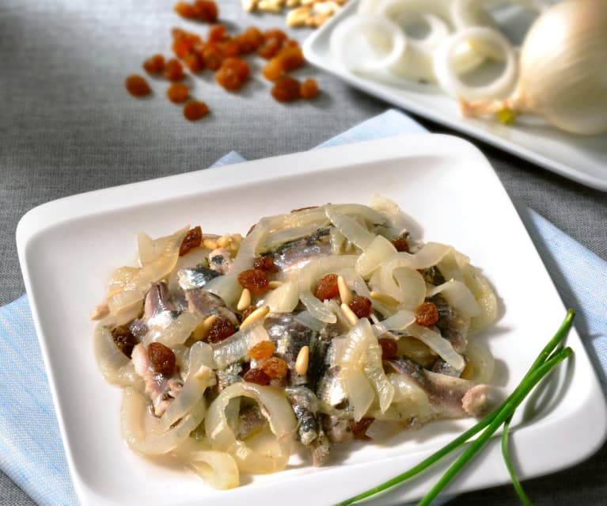

Sarde in Saor

A flavourful fish dish that houses both a sweet and sour nature
This sardine-based item is a favourite among Venetians and dates back to the 16th century.
It's commonly eaten as an appetizer, but can be served as a full meal. It's mix of freshness and
sweetness with a kiss of sour is not to be missed.
Sarde in Saor is also popular for how easy it is to prepare.
You may also add whatever you like to it to compliment the tastes you are looking for.
Difficulty: Intermediate
Prep Time: 45 minutes (let sit for 4 hours)
Ingredients
- Half cup of white wine
- Cup of raisins
- 2 lb. sardines, cleaned
- Kosher salt and freshly ground black pepper
- Cup of olive oil
- Large white onion, thinly sliced
- Third of a cup of white wine vinegar
- Fourth of a cup of pine nuts
Steps
- Combine wine and raisins in a bowl. Soak for 30 minutes and then drain.
- Heat oil in a 4-qt. pan over medium heat. Add onion and vinegar and cook for 6-8 minutes.
- Stir in raisins, nuts, salt, and pepper. Let cool
- Place half the sardines on the bottom of serving dish. Cover the other half
with onion.
- Place the other half of the sardines in dish and then cover with onion.
- Marinate in refrigerator for 4 hours.
- Enjoy!
Back to the Top
Home